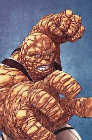

Кратко о герое
Бен Гримм был астронавтом, попавшим под облучение космических лучей. Его трансформация превратила его в каменное существо, но это не сломило его дух. Он сердце и мощь Фантастической четверки с большим сердцем.
Здібності та переваги
- Колоссальна фізична сила
- Камeннa кожа та невразливість
- Боєві навички
- Верність та доброта